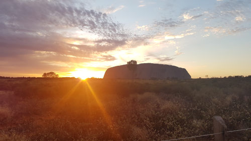

Auf Reisen habe ich schon viele Orte gesehen und auch fotografiert.
Hier habe ich Ihnen eine kleine Auswahl zusammengestellt.
Der Uluru im Red Centre, Australien
Die Kanäle Mailands
Im Australian War Memorial in Canberra stehen alle Namen der Australischen Soldaten die in jeglichen Kriegen gestorben sind.
Wann immer ich unterwegs bin filme ich besondere Momente. Aus genau so einem Moment ist dieses Video entstanden:
<<<<<<< HEAD ======= >>>>>>> 60d9837... Aufgabe P1-2 bearbeitetIn my mind:
Ich habe mehrere Kapitel einer Geschichte verfasst, die mir nicht mehr aus dem Kopf ging.
Im ersten Kapitel wird die Protagonistin vor
Herausforderungen gestellt, die weitreichende Folgen nach sich ziehen werden.